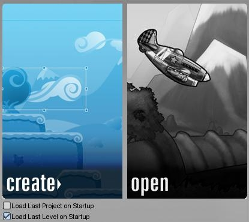
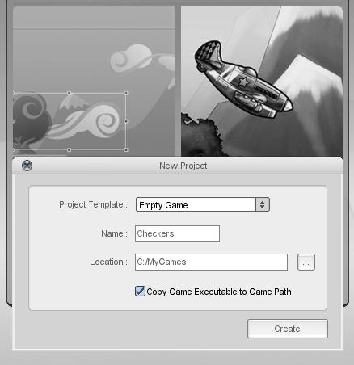

Creating a New Project
To make a new project, we must first open Torque 2D. After loading the application you should be presented with the T2D launch menu. This menu will have
two options. Creating our project from here is very simple, just click the create button.

Now you should be presented with a dialog asking for the name of your new project. Name it whatever you want (if you are doing a tutorial then it is recommended you give it the suggested name from the tutorial). You can also select a Project Template, which can be used as a starting location for your project. Most new projects will just begin as empty projects and do not require a template, adding art is an easy step afterwords. The second to last setting is the project's Location on your computer. Be sure to change this location to a familiar place (or leave it as the default).
Finally, if Copy Game Executable to Game Path is checked, the game's binary (which allows you to launch it without Torsion or the Editor) will be copied into your directory.

When you are finished with your project settings, and are sure of the name and location, simply click the "Create" button and you should be presented with your new project.